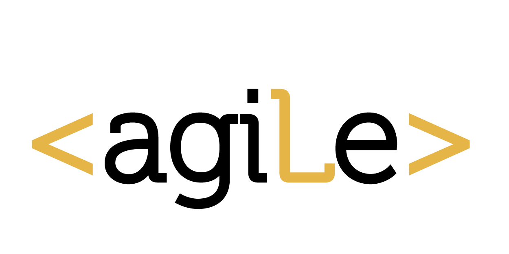

<DOCTYPE!>
<html> 
	<head> 
		<link rel="icon" href="favicon.ico"/>
	</head>
	<body background="265H.jpg">
		<div width="100%" height="30%" align="center"> </div>
						<table>   
	   					<tr>
	   	  					<td><a href="https://https://adtmag.com/articles/2010/07/30/is-google-going-agile.aspx"/></a></td>
							<td><a href="https://labs.spotify.com/2014/03/27/spotify-engineering-culture-part-1/"></a></td>
          					<td><a href="https://www.rallydev.com/blog/agile/ebay-goes-agile-get-its-tech-savvy-back-businessweek"></a></td>
	     					<td><a href="https://adtmag.com/articles/2011/01/14/how-facebook-does-agile.aspx"></a></td>
         					<td><a href="http://www.investopedia.com/articles/personal-finance/041715/zaras-agile-project-management-advantage.asp"></a></td>
   	     					<td><a href="http://www.cio.com/article/2396348/developer/formula-one-racing-team-speeds-to-agile-development.html"></a></td>
   	     					<td><a href="http://searchcio.techtarget.com/feature/How-PayPal-rallied-a-4000-strong-move-to-Agile"/></a></td>
   	     					<td><a href="https://www.google.com.pe/url?sa=t&rct=j&q=&esrc=s&source=web&cd=1&cad=rja&uact=8&ved=0ahUKEwj83qmjmvTNAhXFHZAKHSqYBpsQFggbMAA&url=http%3A%2F%2Flaboratoria.la%2F&usg=AFQjCNG1xfhC9ZKu5Gwym1HD9Zee6UHQHQ&bvm=bv.127178174,d.Y2I"/></a></td>
	 					</tr>
					</table>
				     </div>
                         <div id="piedepagina">
                         <p>COMUNÍCATE A TRAVÉS DE LOS SIGUIENTES MEDIOS DE CONTACTO </p>
                     </div>
	</body> 
</html>
